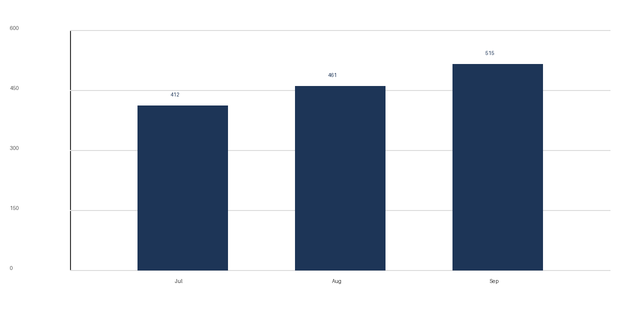

This digest summarizes the performance of the Northwind platform for the month of October 2026. It covers acquisition, engagement, and retention, and it is the standing agenda for the weekly operating review. Figures are drawn from the warehouse on the morning of 1 November and are not restated after that point.
| 341Active accounts+9.3% MoM | 18,204Monthly active users+6.1% MoM | 96.8%Logo retention+0.4pp MoM |
New account creation held steady against the September baseline while the mix shifted toward self-serve signups. Trial-to-paid conversion rose on the back of the onboarding changes shipped in the first week of the month, and paid acquisition cost fell as the channel mix rebalanced.
| Channel | Trials | Paid | Conversion | CAC (USD) |
|---|---|---|---|---|
| Organic search | 612 | 148 | 24.2% | 0 |
| Paid search | 488 | 96 | 19.7% | 214 |
| Partner referrals | 204 | 71 | 34.8% | 120 |
| Events and field | 86 | 22 | 25.6% | 388 |
| Total | 1,390 | 337 | 24.2% | 158 |
Session depth improved across every plan tier. The largest gain came from the reporting workspace, where the new saved-view feature lifted return visits within seven days. The table below breaks engagement out by plan tier; the chart compares monthly active users against the prior three months.
| Plan tier | Accounts | MAU | Sessions / acct | Avg. session |
|---|---|---|---|---|
| Starter | 188 | 6,410 | 4.8 | 7m 12s |
| Team | 102 | 7,884 | 9.6 | 12m 40s |
| Business | 39 | 3,102 | 16.4 | 21m 05s |
| Enterprise | 12 | 808 | 24.9 | 28m 51s |
| Total / weighted | 341 | 18,204 | 9.1 | 13m 22s |

Logo retention improved for the third consecutive month. Revenue retention remains above 100% because expansion within existing accounts more than offsets the small amount of contraction and churn observed in the Starter tier.
| Cohort | Start accounts | End accounts | Logo retention | Revenue retention |
|---|---|---|---|---|
| July | 298 | 312 | 95.6% | 104.2% |
| August | 312 | 325 | 96.1% | 106.8% |
| September | 325 | 341 | 96.4% | 108.1% |
| October | 341 | 341 | 96.8% | 109.3% |